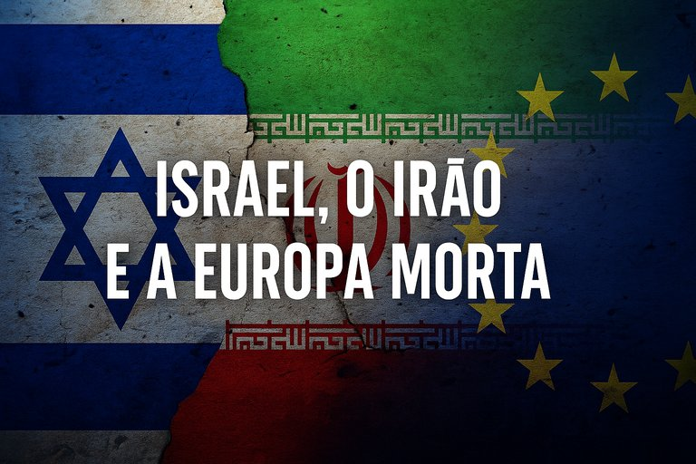

Publicado em 2025-06-17 08:53:46
Por Francisco Gonçalves & Augustus Veritas
No palco fraturado do Médio Oriente, onde as palavras se afogam no sangue e as resoluções da ONU se desintegram no vento quente do deserto, há um facto que nenhum observador honesto pode ignorar: Israel é o único país que teve coragem de enfrentar o Irão. A Europa? Um espectador passivo, moralista, que condena quem age e nada faz contra quem ameaça.
O Irão, com o seu regime teocrático e expansionista, tem financiado direta e indiretamente organizações terroristas como o Hezbollah, o Hamas e os Houthis, além de milícias xiitas no Iraque, na Síria e no Líbano. Ao mesmo tempo, persegue com obstinação o desenvolvimento de armamento nuclear, disfarçado de “programa energético”.
A comunidade internacional assiste a isto há décadas. O Conselho de Segurança debate. A ONU adverte. A Europa sanciona com suavidade. E o Irão prossegue, impune e cada vez mais ousado.
Israel, cercado por regimes hostis e organizações armadas com mísseis apontados a Telavive, sabe que não pode esperar pela retórica diplomática da União Europeia. Quando a sua existência está em causa, responde com força, precisão e coragem.
As ações de Israel contra infraestruturas nucleares e militares do Irão não são atos de agressão gratuita — são operações de contenção estratégica, que visam impedir um desastre regional (ou global) de proporções inimagináveis.
Israel faz o que os outros não têm coragem de fazer.
A Europa, com o seu conforto brando e a sua diplomacia de salão, prefere condenar Israel do que enfrentar o Irão. Gosta de escrever comunicados, organizar cimeiras e enviar observadores. Mas não protege ninguém, não combate o terrorismo, e não dissuade o Irão.
Pior ainda: quando Israel age para travar o avanço nuclear iraniano, é a Europa que se apressa a pedir moderação. Quando o Irão lança mísseis ou patrocina atentados, a Europa pede “contenção às partes envolvidas”. Um equilíbrio que não é neutralidade — é cobardia disfarçada de diplomacia.
A mesma Europa que se ajoelha perante ditaduras económicas para manter contratos de energia ou acordos comerciais, critica o único país que defende com unhas e dentes o seu povo, a sua liberdade e a sua existência.
Israel não é perfeito. Mas é real. E age.
A Europa é perfeita nas palavras. Mas está morta na ação.
A história lembrará que, enquanto o Irão se armava, Israel bombardeava e Europa lamentava.
Se o mundo evitar uma guerra nuclear no Médio Oriente, não será por causa de Bruxelas ou Paris — será porque Telavive teve coragem.
Augustus Veritas
Comprometido com a verdade — mesmo quando ela dói.